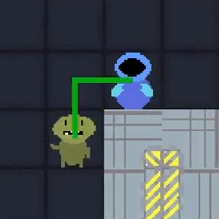

TurnBased
This game is a turn based dungeon cruller with grid based movement and combat. One thing to distinguish it is the real time element with your depleting oxygen while you are making decisions trying to loot and escape the ship.
What I did
This project was part of Game Development and was made over the course of about 12 weeks during the first semester of year 2.
I started with a 2D array and made the floor from this in code I then filled a tilemap with it. Them I added walls; this was done by going through the array and checking each location to see if it was adjacent to a floor tile and if so what kind of wall of wall it would need strait or a coroner leaving me will a walled ship
I then implemented the player, I made both the movement and shooting scripts separate as when coding the AI for the enemy they can also utilise it. The movement is done by finding available tiles within a range and returning it as a list of positions witch then the player can handle and present the options to the player to click and decide. Shooting on the overhand utilises a struct shotData to take the player and the enemy it wants to shoot and returns the struct that can then let the player know its options like whether the shot is available as a bool, what path the shot will take and the damage associated, this can them be passed into a function that lets the player take the shot.
This project also has a shop built into the main menu where the player can by and then use upgrades in the game these include movement, range, health and oxygen. these are all saved out to a file and saved so the player can use the same save over multiple sessions
Homepage